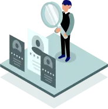
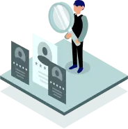

Introductions that save you money.
Avoid inflated costs, keep your identity hidden while searching for Partners, and get rewarded for paying on-time.
Introductions that save you money.
Avoid inflated costs, keep your identity hidden while searching for Partners, and get rewarded for paying on-time.


 

On-demand Talent
Review candidates and interview directly. Team extensions available from 1+ hires. Supercharge your growth with a flexible workforce

Service Teams
Connect with the best available expertise for your current project. Save money and time with a partner who understands your product.
Product Development
Benefit from expert team efficiency and keep your focus on task by outsourcing Lead Generation, Sales, HR, Marketing and more.
Chin-wag empowers you with the ability to request information from the resource marketplace without revealing your Identity.
Review applications and schedule introductions with total discretion.
Marketing platforms, and agencies, can inadvertently inflate your partnership costs by charging hidden fees.
We’ve put a stop to that problem.
With charge-free & efficient matchmaking, we ensure partnership costs are never more than they would have otherwise been, even if created directly or through referral.

Secure the best rates and get rewarded for on-time payments with 5% discount against your next invoice. The equivalent to 1 free days work, for 20 days paid.

The Best Business Partnerships


Describe your Business
Pseudonymously Publish your Requirement
Schedule Introductions with Providers of Interest
Negotiate Engagement Terms Directly
Benefit from Pay-on-Time Rewards.
Want to receive applications for your requirement in 48hrs?
Do you have available resources and trusted expertise?